Overhaul
Pump OverhaulPower Steering Pump:
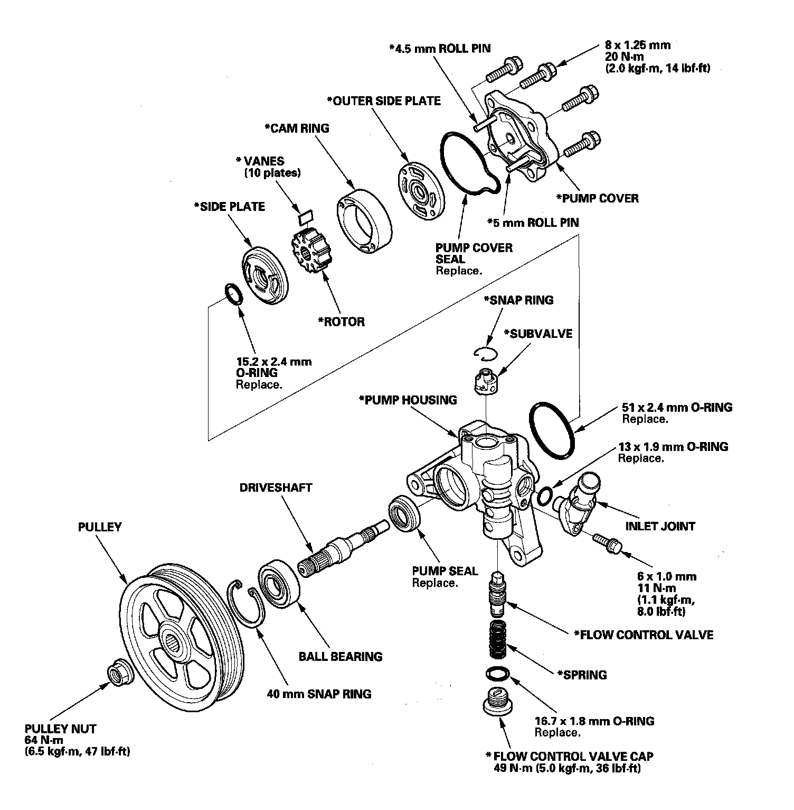
Special Tools Required
^ Attachment, 28 x 30 mm 07946-1870100
^ Driver 07749-0010000
^ Pulley holder 07ZAB-S5A0100
Disassembly
NOTE: Refer to the Exploded View as needed during the following procedure.
1. Drain the fluid from the pump.
2. Remove the power steering pump.
3. Hold the power steering pump (A) in a vise with soft jaws (B) then hold the pulley (C) with the pulley holder (D) and remove the pulley nut (E) and pulley. Be careful not to damage the pump housing with the jaws of the vise.
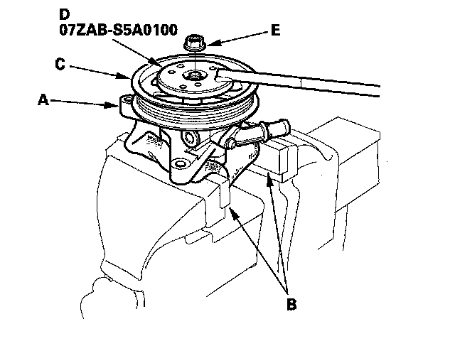
4. Remove the inlet joint and O-ring.
5. Loosen the flow control valve cap with a hex wrench, and remove it and the O-ring, the flow control valve and spring.
6. Remove the pump cover and pump cover seal.
7. Remove the outer side plate, cam ring, rotor, vanes, side plate and O-rings.
8. Remove the snap ring, then remove the subvalve from the pump housing.
9. Remove the snap ring, then remove the pump driveshaft by tapping the shaft end with a plastic hammer.
10. Remove the pump seal from the pump housing.
Inspection
11. Check the flow control valve for wear, burrs, and other damage to the edges of the grooves in the valve.
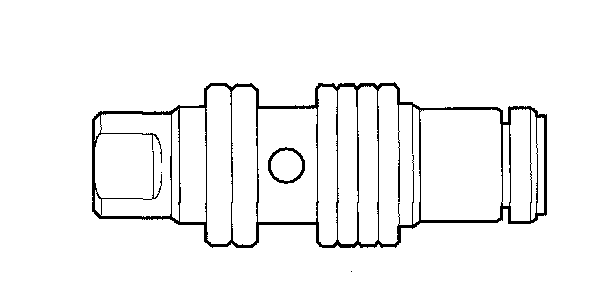
12. Inspect the bore of the flow control valve on the pump housing for scratches and wear.
13. Slip the flow control valve back in the pump housing, and check that it moves in and out smoothly. If OK, go to step 14; if not, replace the pump as an assembly. The flow control valve (A) is not available separately.
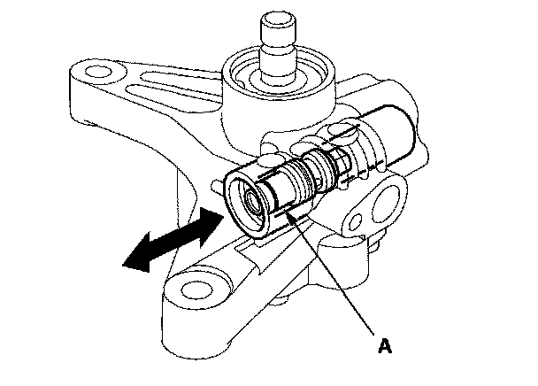
14. Attach a hose (A) to the end of the flow control valve (B) as shown. Then submerge the flow control valve in a container of power steering fluid or solvent (C) and blow in the hose.
^ If air bubbles leak through the valve at less than 98 kPa (1.0 kgf/cm2, 14.2 psi) replace the pump as an assembly. The flow control valve is not available separately.
^ If the flow control valve is OK, set it aside for reassembly later.
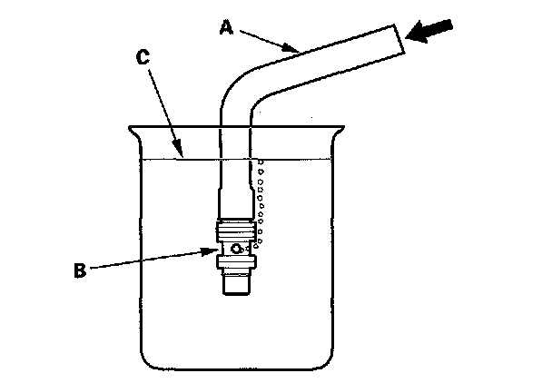
15. Inspect the ball bearing by rotating the outer race slowly. If you feel any play (axial or radial) or roughness, remove the faulty ball bearing (A) and install a new one (B).
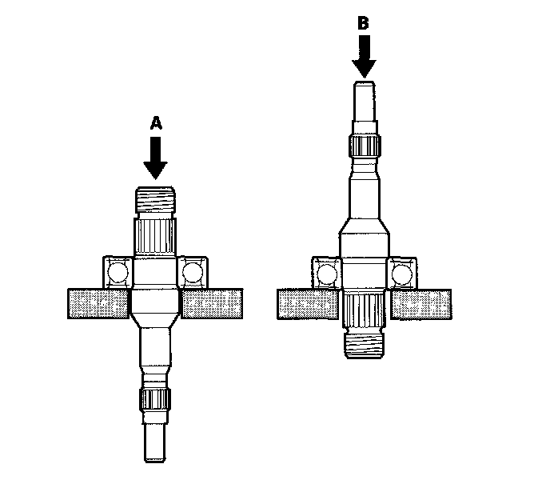
16. Inspect each part shown with an asterisk in the Exploded View. If any of them are worn or damaged, replace the pump as an assembly.
Reassembly
17. Align the pin (A) of the subvalve (B) with the oil passage (C) in the pump housing, and push the subvalve into place, then install the snap ring (D).
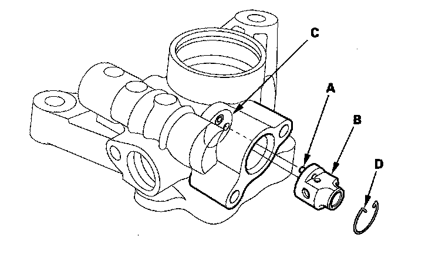
18. Install the new pump seal (A) (with its grooved side facing in) into the pump housing (B) by hand first, then drive it in using the driver and attachment until there is no step at the top of the pump seal, and the seal is fully seated in the pump housing.
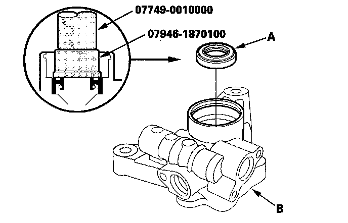
19. Position the pump driveshaft (A) in the pump housing, then press it in with the appropriate size socket wrench (B) as shown.
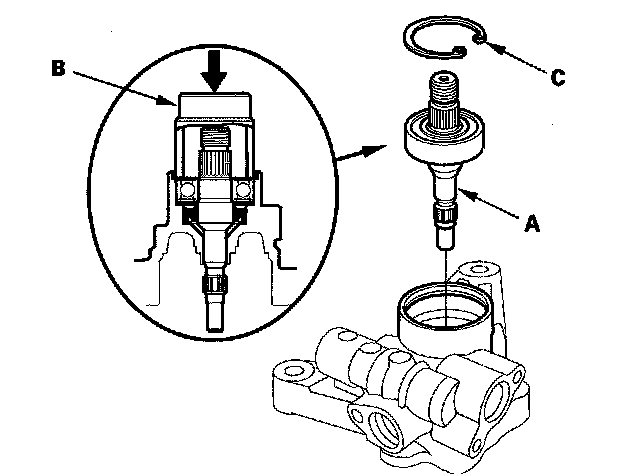
20. Install the 40 mm snap ring (C) with its beveled edge facing out.
21. Coat the new pump cover seal (A) with power steering fluid, and install it into the groove in the pump cover (B).
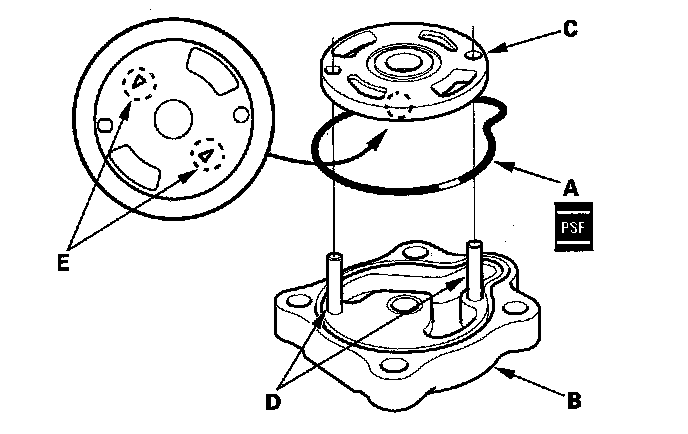
22. Install the outer side plate (C) over the two roll pins (D) with its arrow marks stamped (E) facing down.
23. Set the cam ring (A) over the two roll pins with the "." marks (B) facing down.
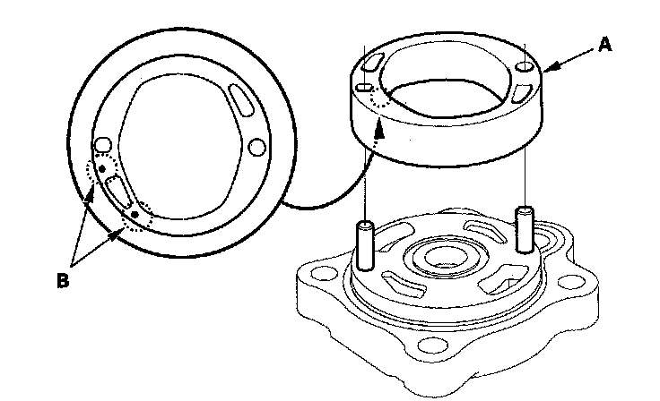
24. Install the rotor (A) to the pump cover (B) with its "." mark (C) facing up.
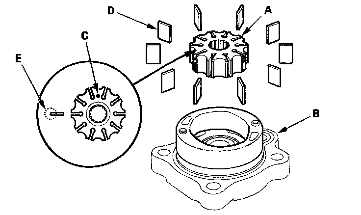
25. Set the 10 vanes (D) in the grooves in the rotor. Make sure that the round ends (E) of the vanes are in contact with the sliding surface of the cam ring.
26. Coat the new 15.2 mm O-ring (A) with power steering fluid, and install it into the groove in the side plate (B).
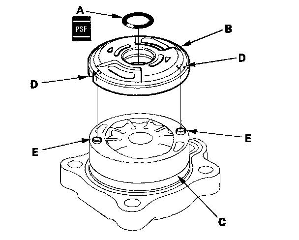
27. Install the side plate on the cam ring (C) by aligning the roll pin set holes (D) in the side plate with the roll pins (E).
28. Coat the new 51 mm O-ring (A) with power steering fluid, and position it in the bottom of the pump housing.
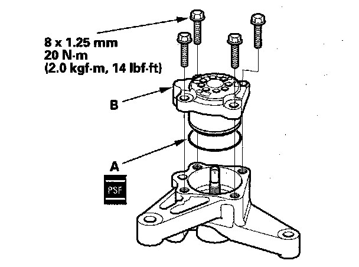
29. Install the pump cover assembly (B) in the pump housing. Tighten the bolts to the specified torque alternating in two or more steps.
30. Coat the flow control valve (A) with power steering fluid, then install it and the spring (B) in the pump housing.
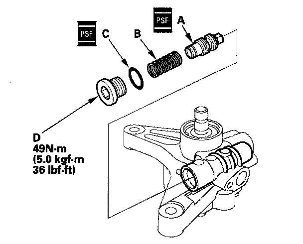
31. Coat the new 16.7 mm O-ring (C) with power steering fluid, and install it on the flow control valve cap (D) then install the cap on the pump housing. Tighten it to the specified torque.
32. Coat the new 13 mm O-ring (A) with power steering fluid, and install it on the inlet joint (B). Install the inlet joint on the pump housing.
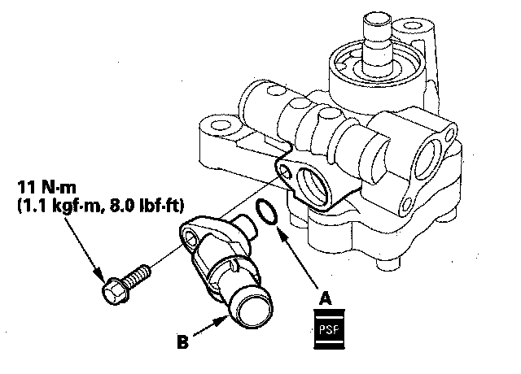
33. Install the pulley (A) then loosely install the pulley nut (B). Hold the steering pump in a vise with soft jaws. Be careful not to damage the pump housing with the jaws of the vise.
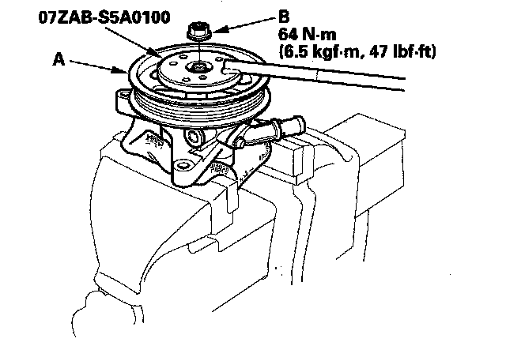
34. Hold the pulley with the pulley holder, and tighten the pulley nut to the specified torque.
35. Check that the pump turns smoothly by turning the pulley by hand. If it turns hard, loosen the four flange bolts on the cover, then retighten them in same manner as in step 29. Turn the pump again by hand.